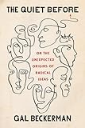
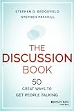
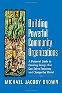
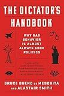
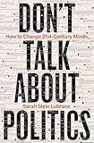
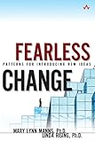

Conclusion
a few more tips and a modest proposal
Things We Didn't Cover
- Change in a time of crisis
- The K-T Event gave mammals their chance, but was bad news for the dinosaurs
- Fatigue and burnout
- Watch for early warning signs
- Don't be ashamed to ask for help
- Be kind to each other
- Persuading people
- "It is not enough to be right: one must be heard."
What to Read Next






Retrospective
- Software Carpentry
- Has helped tens of thousands of people over 15 years
- But hasn't become a normal part of the curriculum
- "We will teach you to program so you can do better research faster"
- "We will teach you how to teach so you can help your colleagues do the same"
- "We will teach you how to organize so that you can make this normal"
- In retrospect, should have made the third step explicit:
- It's never too late…
- Whatever you decide:
- Start where you are
- Use what you have
- Help who you can
Exercise: Retrospective
- What is the single most useful, interesting, or surprising thing you learned in this workshop?
- What was included that you don't think you will find useful?